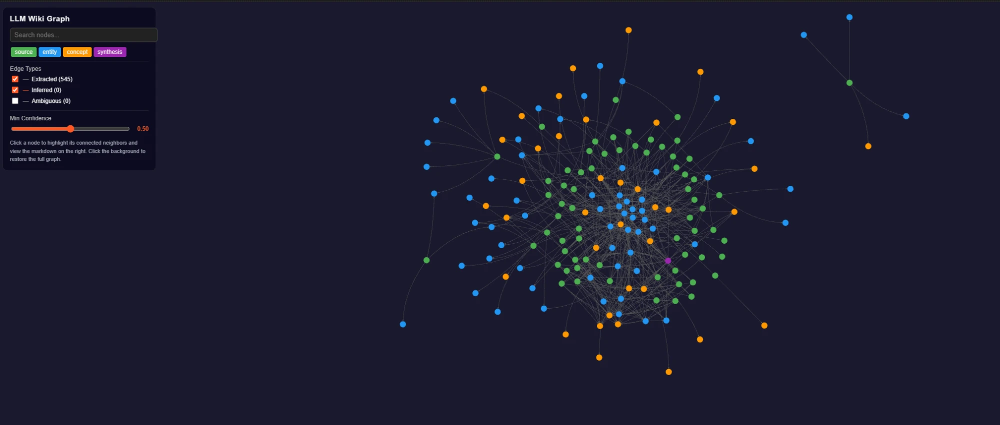

LOKALE AI · KENNISGRAAF · AUTO-INGEST
LLM Wiki
Een zelf-onderhoudende kennisbank: bronnen worden automatisch ingelezen, entiteiten en concepten geëxtraheerd, en alles verbonden in een doorzoekbare kennisgraaf.
RESULTAAT
Bronnen automatisch ingelezen en verbonden in een kennisgraaf met honderden nodes — volledig lokaal.

01 HET PROBLEEM
Kennis raakt versnipperd over notities, documenten en gesprekken. Ik wilde een systeem dat bronnen automatisch inleest, samenvat en verbindt — zodat het overzicht meegroeit in plaats van te verwateren.
02 WAT HET DOET
- Automatische ingest
- Drop een bron in de inbox en de wiki leest hem in: samenvatting, kernclaims, entiteiten en concepten worden er automatisch uit gehaald.
- Kennisgraaf
- Alles wordt verbonden in een doorzoekbare graaf met honderden nodes en relaties, met aparte types voor bronnen, entiteiten, concepten en syntheses.
- Levende synthese
- Een overzichtspagina wordt bij elke ingest herschreven, zodat de rode draad over alle bronnen actueel blijft.
- Lokaal & privaat
- Draait op lokale AI; de volledige kennisbank blijft op je eigen machine.
- Gezond gehouden
- Ingebouwde controles op wees-pagina's, gebroken links en tegenstrijdigheden houden de kennisbank consistent.
03 WAT IK ERVAN LEERDE
De waarde zat niet in nóg meer notities, maar in de verbindingen ertussen. Zodra ingest, graaf en synthese samenwerkten, werd een losse verzameling documenten een echt kennissysteem.
INTERESSE?
Laten we praten.
Vertel me wat je ervan vindt — of wat je ermee zou willen doen.